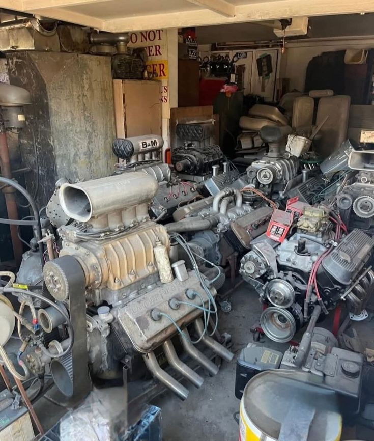
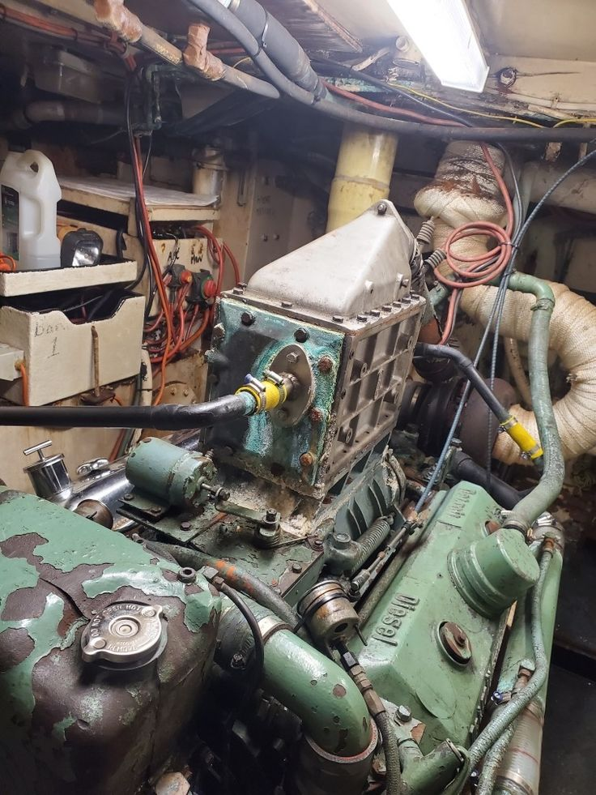

<div *ngIf="isOpen" class="fixed inset-0 z-50 flex items-center justify-center bg-black bg-opacity-50" (click)="closeModal()">
  
  <div class="relative w-full max-w-2xl mx-auto my-auto bg-white rounded-lg shadow-lg overflow-hidden" (click)="$event.stopPropagation()">
    
    <div class="flex items-center justify-between p-3 bg-seagreen">
      <h3 class="text-lg font-semibold text-white flex-1 text-center ml-8">Attachments</h3>
      <button (click)="closeModal()" class="text-white hover:text-gray-200 text-2xl leading-none">
        &times; 
      </button>
    </div>
    
    <div class="p-6 h-96 overflow-y-auto bg-gray-50">
      
      <div class="grid grid-cols-1 sm:grid-cols-2 gap-4">
        
        <div class="border rounded-lg overflow-hidden bg-white shadow-sm">
           
           <p class="p-2 text-xs text-center text-gray-500 font-medium">Image 1</p>
        </div>

        <div class="border rounded-lg overflow-hidden bg-white shadow-sm">
           
           <p class="p-2 text-xs text-center text-gray-500 font-medium">Image 2</p>
        </div>

        <div class="border rounded-lg overflow-hidden bg-white shadow-sm">
           
           <p class="p-2 text-xs text-center text-gray-500 font-medium">Image 3</p>
        </div>

        </div>
      
    </div>
    
    <div class="p-3 bg-white border-t flex justify-end">
        <button (click)="closeModal()" class="px-4 py-2 bg-gray-200 text-gray-700 rounded-md hover:bg-gray-300 text-sm font-medium">
            Close
        </button>
    </div>

  </div>
</div>